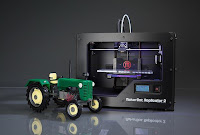

A nova economia da conceptualidade e o paradigma da substituição de átomos por bits !
Publicado em 2014-09-22 13:55:00
Graças principalmente à internet, monopólios de longa data e desequilíbrios de poder estão a ser desafiados à medida que mais pessoas, de mais regiões do mundo, se conectam, colaboram e competem no palco global. Jovens em toda parte questionam as tradições de instituições veneráveis, como a universidade, os jornais, as organizações médicas e todo o aparato do governo representativo.
No futuro já não tão distante, vamos olhar para o período actual como um tempo em que o mundo iniciou uma transição histórica do capitalismo industrial para um novo tipo de economia baseado em novos princípios e novas formas de pensar e agir. Alguns, obviamente, vão dizer que os efeitos de longo prazo dessas mudanças são difíceis de prever com precisão. 
Pode ser verdade, mas vale lembrar que o futuro é algo para se alcançar, não para predizer. E, no meio da névoa e da confusão, começam a se revelar os contornos de novas formas de organização humana, tão revolucionárias quanto aquelas trazidas pela invenção da imprensa há cinco séculos. Graças ao novo meio global de colaboração e a um nível de conectividade social sem precedentes, as pessoas em empresas, governos e na sociedade como um todo têm poderosas ferramentas para reinventar as instituições com base em novos princípios organizacionais.
E esta revolução já começou e é mesmo já uma realidade. Como tal deixo aqui apenas um pequeno "insight" sobre esta revolução que as novas tecnologias, sempre suportadas na Internet, irão desencadear, traduzindo uma nova economia da conceptualidade, que irá substituir a actual economia baseada em sistemas produtivos tradicionais assentes em átomos, característicos da "velha" era industrial! Já uma realidade e não ficção como vos pode parecer à primeira vista!
E estas tecnologias irão permitir, num futuro próximo, imprimir automaticamente todos os objectos a que a que a nossa civilização já nos habituou e muitos outros que serão "concepcionados" através de um computador e de um programa de "desenho" em 3D, para produzir os componentes que precisamos, para materializar desde o carro ao avião mais veloz, passando pela construção de edifícios ou até de bases na Lua ou em Marte.
Chamam-se por agora impressora 3D, mas na verdade são fábricas (até pessoais) autênticas e totalmente automáticas. Copiam um modelo desenhado previamente no computador e "imprimem" o objecto anteriormente concebido por um ser humano criador (conceptualizador - daí o termo economia da conceptualidade).
Há também já impressoras 3D que cozinham alimentos. Isto é, confeccionam os "menus" que pedimos através de um computador e onde escolhemos o tipo de confecção desejada! Depois é só esperar uns minutos até sair o prato pronto a ir à mesa, exactamente produzido pela mesma técnica de “impressão”, através de camadas sucessivas ! :)
Este paradigma há mais de uma década anunciado por Nicholas Negroponte do MIT, de uma sociedade em que o mundo dos átomos dá lugar ao mundo dos bits.
Como exemplo veja-se este video, mas aconselho a que pesquisem na net por "Impressoras 3D ou 3D Printers - Uma impressora 3D que produz em minutos uma chave inglesa perfeitamente funcional a partir de um modelo desenhado em computador e através de um “ferramenta” de desenho em 3D.
Ver Vídeo de uma impressora 3D que produz em minutos uma chave inglesa!
Por Francisco Gonçalves "in" Notas Soltas @01April2013
(francis.goncalves@gmail.com)
A Gartner, empresa de estudos de mercado estima que em 2016 as mais vulgares impressoras 3D custarão menos que hoje um normal computador de secretária (Ler mais info).